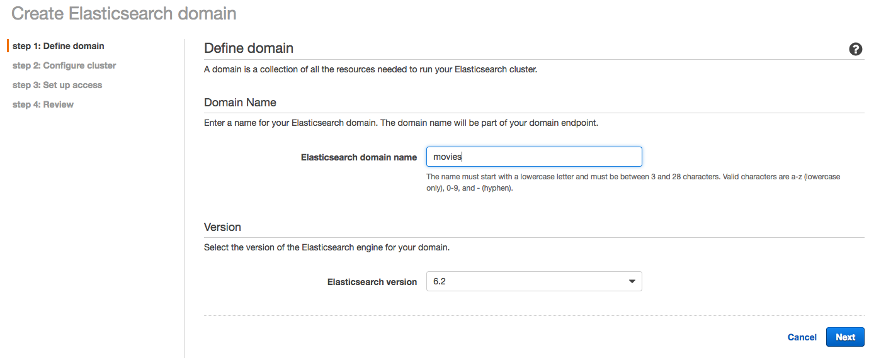
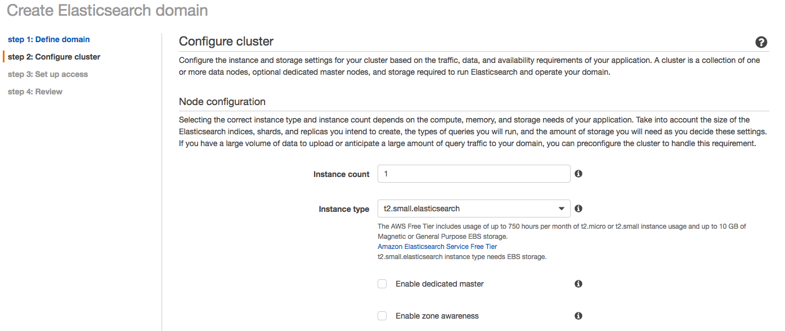
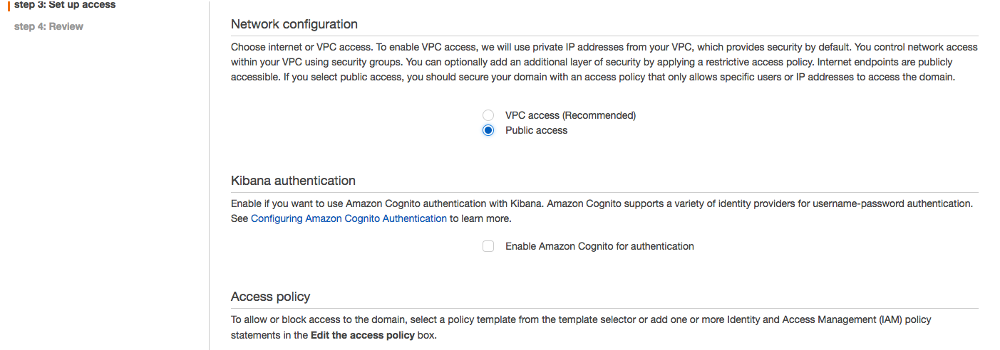
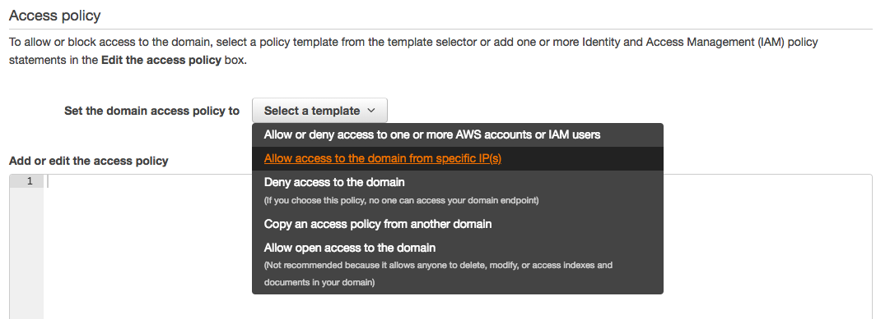
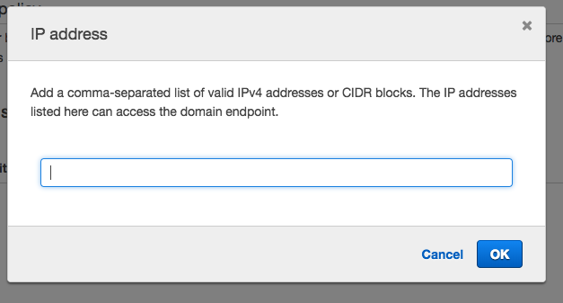
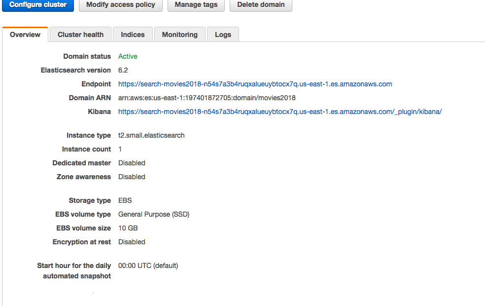
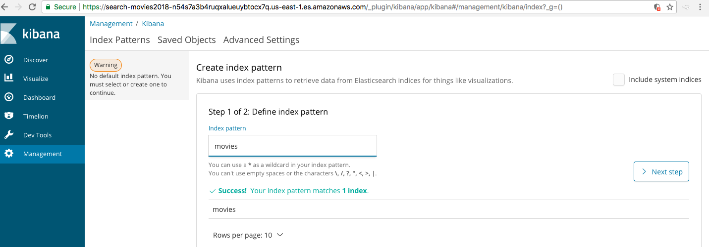
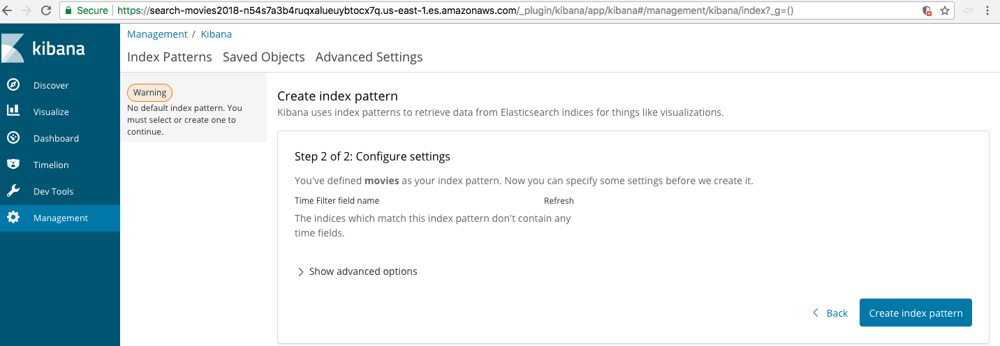
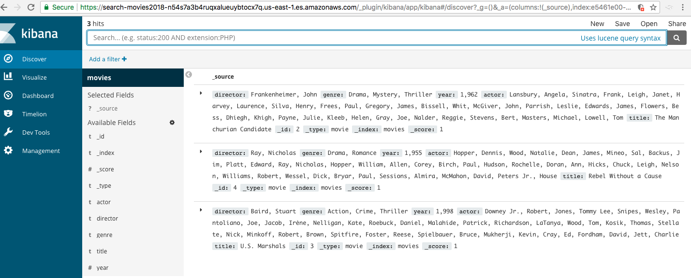

Searching movie database using ElasticSearch
Objective of Project:
Import movie database into ElasticSearch and then search it.
Approach:
- Create domain for ElastcSearch and Kibana plugin
- Create JSON file with the movie database
- Upload the JSON data to ElasticSearch
- Search the data using Kibana plugin
Steps to be followed:
Create domain for ElastcSearch and Kibana plugin.
Type in domain name, keep version as default.

Configure domain with one t2.small instance (comes in free tier)

Configure network by selecting Public Access

Select 'Allow access to the domain from specific IP(s)'. You can find your IP by going to https://www.whatismyip.com/. Optionally if you use Linux/MacOS, type 'dig +short myip.opendns.com @resolver1.opendns.com' in the terminal


After entering IP, click on Create. After about 10 minutes, your domain will be available

Create JSON file with the movie data
{ "index" : { "_index": "movies", "_type" : "movie", "_id" : "2" } } {"director": "Frankenheimer, John", "genre": ["Drama", "Mystery", "Thriller"], "year": 1962, "actor": ["Lansbury, Angela", "Sinatra, Frank", "Leigh, Janet", "Harvey, Laurence", "Silva, Henry", "Frees, Paul", "Gregory, James", "Bissell, Whit", "McGiver, John", "Parrish, Leslie", "Edwards, James", "Flowers, Bess", "Dhiegh, Khigh", "Payne, Julie", "Kleeb, Helen", "Gray, Joe", "Nalder, Reggie", "Stevens, Bert", "Masters, Michael", "Lowell, Tom"], "title": "The Manchurian Candidate"} { "index" : { "_index": "movies", "_type" : "movie", "_id" : "3" } } {"director": "Baird, Stuart", "genre": ["Action", "Crime", "Thriller"], "year": 1998, "actor": ["Downey Jr., Robert", "Jones, Tommy Lee", "Snipes, Wesley", "Pantoliano, Joe", "Jacob, Ir\u00e8ne", "Nelligan, Kate", "Roebuck, Daniel", "Malahide, Patrick", "Richardson, LaTanya", "Wood, Tom", "Kosik, Thomas", "Stellate, Nick", "Minkoff, Robert", "Brown, Spitfire", "Foster, Reese", "Spielbauer, Bruce", "Mukherji, Kevin", "Cray, Ed", "Fordham, David", "Jett, Charlie"], "title": "U.S. Marshals"} { "index" : { "_index": "movies", "_type" : "movie", "_id" : "4" } } {"director": "Ray, Nicholas", "genre": ["Drama", "Romance"], "year": 1955, "actor": ["Hopper, Dennis", "Wood, Natalie", "Dean, James", "Mineo, Sal", "Backus, Jim", "Platt, Edward", "Ray, Nicholas", "Hopper, William", "Allen, Corey", "Birch, Paul", "Hudson, Rochelle", "Doran, Ann", "Hicks, Chuck", "Leigh, Nelson", "Williams, Robert", "Wessel, Dick", "Bryar, Paul", "Sessions, Almira", "McMahon, David", "Peters Jr., House"], "title": "Rebel Without a Cause"}
Upload JSON data to elasticsearch domain
curl -XPOST https://search-movies-foyril6pupmh2frjgfzdxei52a.us-east-1.es.amazonaws.com/_bulk --data-binary @bulk_movies.json -H 'Content-Type: application/json’
From AWS ElasticSearch console, click on Kibana URL. Then click on Create Index

Configure the index with the pattern avilable

After the index is prepared, click on Discover on left panel. You can search any string desired
